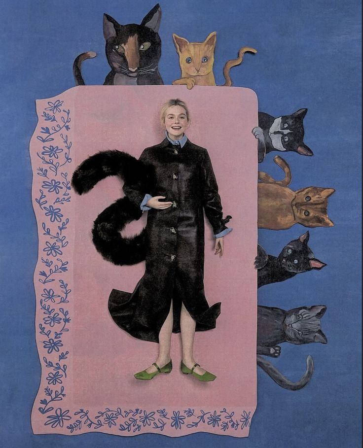
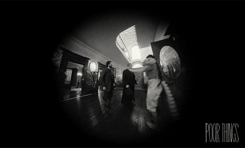
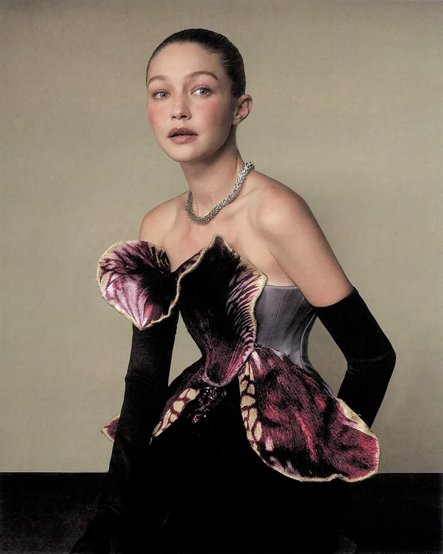

Edición de otoño
01
Szilveszter
Makó
Una introspección a través de su proceso creativo.

Desliza el mouse sobre la foto para revelar el color
01
Una introspección a través de su proceso creativo.

Quien es
Szilveszter Makó es un fotógrafo y director de arte húngaro (nacido en 1992) radicado en Milán, reconocido internacionalmente por su estética teatral, surrealista y pictórica en la fotografía de moda y retratos.
"I am evolving, simply not as quickly as you scroll."


04
En la siguiente pagina te descubriras su arte desde 4 mundos.
